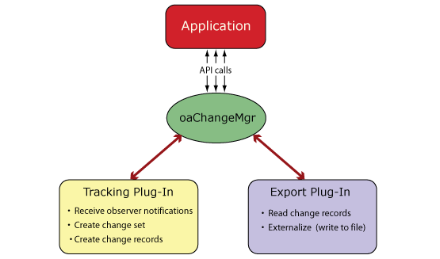
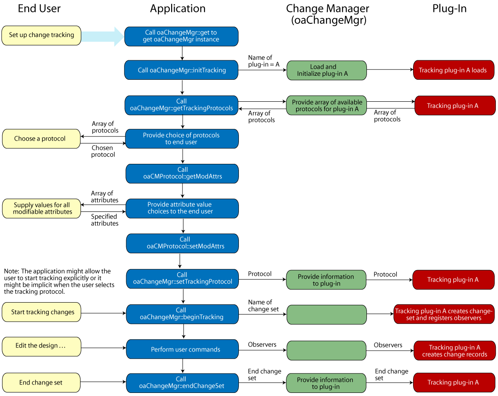
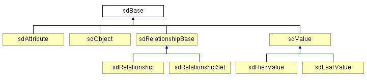
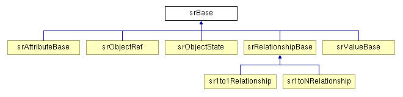
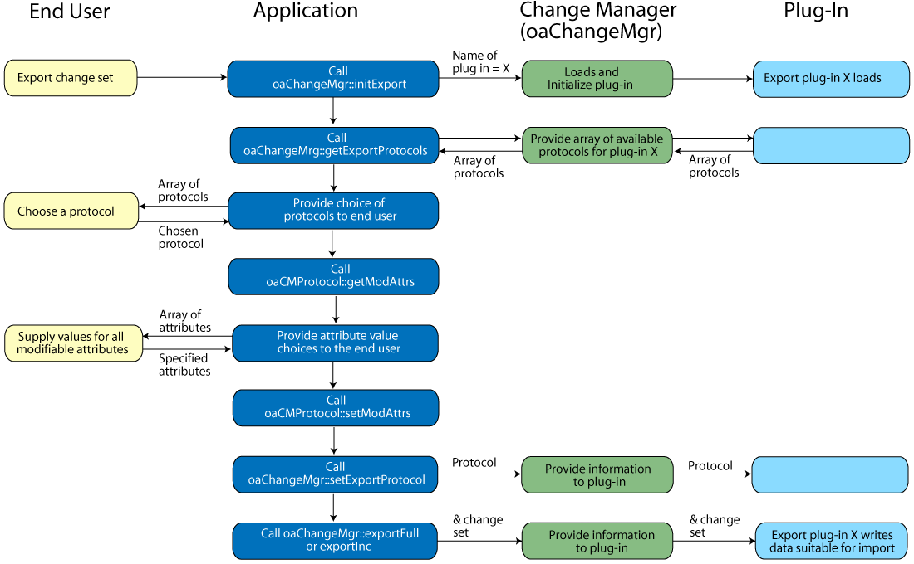

|
 |
 |
||||||
|
|
|
||||||
EDA flows often send data between different applications using batch interactions with on-disk files. However, as design and manufacturing issues become more complex and interdependent, a tighter and more incremental integration is needed between many analysis and optimization engines.
OpenAccess provides a foundation for communicating design data that enables fine-grained collaboration between multiple processes operating on the same design. OpenAccess defines a plug-in based infrastructure that lets software developers create plug-ins for incremental data exchange between cooperating applications. OpenAccess provides the ability to create schema definitions for all it's managed objects in OpenAccess to support the data exchange. The complete infrastructure is called the OpenAccess change management system (CMS).
OpenAccess does not provide any production CMS plug-ins, and it does not specify a format for the data to be exchanged. The infrastructure described here requires an application to have access to CMS plug-ins provided by a 3rd party. For information about creating such plug-ins, refer to How to Write Change Management System (CMS) Plug-Ins.
This document is intended for application developers who want to understand how their application can use CMS. It provides a high level overview of CMS and explains how the pieces of the system work together. Application developers use CMS to access plug-ins that perform the work of incremental data exchange. While this document does cover some details of how plug-ins work, this is only to help explain the overall system. Plug-in developers are not the primary audience.
Important: All documentation for CMS is preliminary and subject to change. CMS is still in development and is considered to be of Beta quality.
The OpenAccess CMS infrastructure provides a standard way for an application to select and configure the plug-ins used to exchange data between applications. The application is not required to have built-in knowledge of any individual plug-in. The application need only know how to follow the protocol specified by the OpenAccess API to provide the plug-in names and other configuration details that are known to the user.
The following example shows two applications using the OpenAccess CMS infrastructure to exchange information about incremental changes to a given design.

An end user of Application 1 starts the process by issuing a command to begin recording changes to the designs. At this point, the tracking plug-in can prompt the user to specify what sort of data should be tracked and what format should be used for recording the changes. The tracking plug-in creates a change set, which is a container for individual changes. The tracking plug-in adds each individual change, known as a change record, to the set and continues with this until the user issues a command to end change tracking.
When it is time to export the data for use by another application, the end user issues a command to initialize the appropriate export plug-in and export the changes. The export plug-in produces a file in a predetermined format that contains the information about the changes.
In application 2, the end user initializes an importer and issues a command to import the changes. The importer verifies that the changes are safe to apply, then applies them to the in-memory representation of the OpenAccess design. Alternatively, the importer can directly modify the application's native database (for an application not based on OpenAccess).
Application 2 can also modify the design and export the changes back to Application 1.
In order to facilitate the sharing of information about design changes, OpenAccess provides a way to describe OpenAccess objects in terms of their relationships, attributes, and attribute values. Such a description of a data model is known as its schema definition. OpenAccess provides provides the ability to create schema definition for the classes, attributes, and relationships that exist in the OpenAccess data model. Refer to Creating Schema Definitions for more information.
Tracking plug-ins can use schema definitions and schema representations to store the appropriate data within the change record. The schema representation captures the instance-specific data from the objects in the design based on the information in the schema definition.
Applications using the CMS infrastructure interact with the tracking and export plug-ins through the oaChangeMgr class. There is one and only one oaChangeMgr instance in a given process.
The application issues API calls, which are provided by the oaChangeMgr instance. The oaChangeMgr instance delegates the requested functionality to the appropriate plug-in interface.

The end user of an application decides when to initiate change tracking. Following this are a sequence of interactions between the end user, the application, the oaChangeMgr instance, and the plug-in. A typical flow might look like this:
The following figure illustrates this flow.

A tracking plug-in uses observers to receive notifications when an object, attribute, or relationship in the design is changed. As changes occur, the tracking plug-in creates change records (oaChangeRecs) for the changes of interest.
A tracking plug-in is responsible for creating and managing change sets (oaChangeSets), which are containers for change records. As individual change records are created, they are added to the active change set. Each function for creating a change record takes a pointer to a change set as one of its arguments.
The order of change records in the change set is important because it reflects the effect of a series of modifications to the design. The end user controls what is included in the change set by specifying when to begin tracking and when to end tracking. Note that database-level changes such as open, purge, and undo/redo are also reflected in the change set.
The oaChangeRec class and its derived classes provide the ability to create change records for:
For a leaf-level change, the following information is needed in the change record:
For example, the oaSetAttributeChangeRec constructor creates a change record for the operation of setting the value of an attribute.
oaSetAttributeChangeRec::oaSetAttributeChangeRec(oaChangeSetBase * changeSetIn,
sr::srAttributeBase::SPtr valueIn
)
The first argument is a pointer to the change set to contain the new change record. The second argument represents the value of a particular reference and holds sufficient information to identify the object whose attribute is being set to a particular value.
A single, high level OpenAccess API call can map to a state change that includes multiple lower level state changes. Such a change is known as a hierarchical state change. For complex APIs, this decomposition can span more than one level of hierarchy, creating a tree of changes.
Separating the intent of the application (reflected by the high level API call) from the implementation of the intent (reflected by lower level changes in response to the API call) is important when using CMS. This separation allows the import plug-in the flexibility to discard lower level change records that are not relevant to the target data model.The import plug-in might also choose to ignore the lower level API calls and simply use the primary change record to initiate the changes when this makes sense.
A typical example of a hierarchical state change is an API call to destroy a block net. The high level call causes the following side effects:
OpenAccess provides scoped observers to group sets of hierarchical changes such as these. For the destruction of the block net, the onBeginDestroy scoped observer marks the beginning of the set of scoped changes.
virtual void onBeginDestroy(T *obj,
oaUInt4 scopeID)
The obj argument is a pointer to the object being destroyed. The scopeID argument, which is a unique ID for a set of scoped changes, is not currently needed in CMS and is provided to support future development.
Tracking plug-ins must monitor the standard observers that occur within the set of scoped changes. For the destruction of the block net, the changes will occur between the onBeginDestroy and onEndDestroy scoped observer notifications. The onEndDestroy observer notification is sent after the net object is destroyed, so this observer takes a pointer to a database instead of an object.
virtual void onEndDestroy(oaObject *database,
oaUInt4 scopeID)
The order of the sequence of standard observer notifications within a set of scoped changes must be maintained.
Continuing with the example of the destruction of a block net, the tracking plug-in would use the information from the set of scoped observers to construct a hierarchical change record (oaHierChangeRec), then use the oaHierChangeRec::setPrimary function to indicate which record is the primary change record. Changes that are side effects of the primary change can then be added with the oaHierChangeRec::addChild function.
On the import side, a plug-in can choose to apply the entire hierarchical change record, including all the non-primary records, or simply use the primary change record to initiate the proper changes in the target application.
An interactive editing application can allow users to undo changes to return a design to its previous state. Changes that were rolled back because of an undo operation can typically be recreated with a redo operation.
A tracking plug-in can take one of two approaches for handling undo and redo operations issued by the application. (Refer to Undo and Redo Use Models in OpenAccess for more information about undo/redo.)
The tracking plug-in might be unaware of the use model that the application uses for undo and redo operations. In this case, the tracking plug-in simply records all changes. This can potentially include a series of changes that nullify each other—such as the creation of an object and the destruction of that same object.
Alternatively, a tracking plug-in can be implemented to be aware of the use model the application uses for undo and redo operations.
The function on oaDesign that returns the undo model currently in use by the application is:
oaUndoModelEnum oaDesign::getUndoModel() const
OpenAccess provides observers that tracking plug-ins can use to receive notification when checkpoints are set or unset.
virtual void oaDesignUndoObserver::onSetCp(oaDesign *design,
oaUInt4 cpID)
virtual void oaDesignUndoObserver::onUnsetCp(oaDesign *design)
In CMS, the oaMarkerChangeRec constructor is used to create a change record indicating a checkpoint was issued in the application. The oacDesignCpMarkerChangeRecType is specified for the oaMarkerChangeRecTypeEnum argument.
oaMarkerChangeRec::oaMarkerChangeRec(oaChangeSetBase *changeSetIn,
oaMarkerChangeRecTypeEnum typeIn,
oaCMDatabaseRef::SPtr dbRef
)
Note: Refer to oaMarkerChangeRecType for a list of all the oaMarkerChangeRecTypeEnums.
While a change set is open, a tracking plug-in can can react to undo and redo operations in the application and remove change records from the change set (depending on the undo use model) according to the location of the oaMarkerChangeRec instance.
Applications let users change the state of a design database with operations such as truncate and purge. In addition, applications allow the user to undo or redo the effect of a sequence of operations.
A tracking plug-in must correctly respond to these operations by performing a rollback of change records to a previously marked point in the change set. The marked point is indicated by an oaMarkerChangeRec and is determined in an operation-specific manner. For example, database-level state change operations like truncate and purge use the last database save point, indicated by an oacDBLOSaveMarkerChangeRec. Other database-level state change operations like revert use the last checkpoint, indicated by an oacDesignCpMarkerChangeRec.
OpenAccess provides observers that tracking plug-ins can use to receive notification when the state of a design database object changes. For example, plug-ins can derive the following observers to receive notification when a design has been saved or purged:
oaObserver<oaDesign>::onPostSave(oaDesign *design)
oaObserver<oaDesign>::onPurge(oaDesign *design)
A tracking plug-in can create oaMarkerChangeRecs for these operations using the oacDBLOSaveMarkerChangeRecType and oacDBLOPurgeMarkerChangeRecType oaMarkerChangeRecTypeEnums, respectively, in the oaMarkerChangeRec constructor. Accordingly, when a user purges a design, the tracking plug-in can discard change records that occurred after the last oaMarkerChangeRec for a save operation was created.
Note: Refer to oaMarkerChangeRecType for a list of all the oaMarkerChangeRecTypeEnums.
A schema definition can be thought of as a map of entities and their attributes and relationships. OpenAccess provides schema definition classes (prefixed with sd) that can represent OpenAccess managed objects in a generic way. An sdObject can provide the schema definition for any OpenAccess class by specifying the attributes and relationships that can exist for objects of that class. The sdBase class is the base class for all the schema definition classes that can be used to define the schema of a design.

Consider a schema definition for a path segment called mySegment. The schema definition should provide an sdObject with the ID, name, description, namespace, and the class from which the path segment inherits. Next, the schema definition needs to include information about the attributes of the object and any relationships it can have. The sdAttribute and sdRelationship classes are used for this purpose. By itself, the schema definition does not capture the particular value of an attribute for a particular object. For example, the mySegment schema definition does not capture the value of the begin point for a particular path segment in a design. The schema definition is paired with a schema representation, which provides a mechanism for referring to specific data in a design.
The Creating Schema Definitions document includes an example that creates a schema definition for a path segment. In addition, Traversing and Iterating Schema Definition Objects explains how to get information about existing schema definition objects.
OpenAccess provides a set of classes that are used to capture information about a particular schema definition object, attribute, relationship, or value. The srBase class and its derived classes include the interfaces necessary for representing the actual data for objects in a schema definition.

The schema representation classes contain the following:
For example, for the oaPathSeg begin point attribute, the schema representation classes provide:
The application needs to implement a derived visitor class to get the type safe values. Refer to the srVisitor class reference page for more information.
When its time to synchronize the design data, the end user starts the export process by initializing the export plug-in. Following this are a sequence of interactions between the end user, the application, the oaChangeMgr instance, and the plug-in. A typical flow might look like this:
The following figure illustrates this flow.

Refer to Importing Changes from the Change Management System (CMS).
Change management system (CMS) |
In OpenAccess, a plug-in based infrastructure that supports incremental design synchronization between cooperating applications. |
Change record (oaChangeRec) |
Represents a change made to a design. Change records are utility objects created by tracking plug-ins. They can also be created by import plug-ins. |
Change set |
An ordered set of change records that reflect the effect of a series of modifications to one or more designs. |
Checkpoint |
A checkpoint (created with oaDesign::setCp) marks the current state of a design. A call to oaDesign::undo() restores the design to a previous state. In CMS, an oaMarkerChangeRec creates a change record indicating a checkpoint was issued by the application. While a change set is open, a tracking plug-in can can react to undo and redo operations in the application and remove change records from the change set according to the location of oaMarkerChangeRec objects. oaMarkerChangeRec objects impose an implicit requirement of atomicity on the change records between them. The change records between oaMarkerChangeRec objects must be consumed their entirety for the operation to be considered successful. |
Export plug-in interface |
Well defined abstract interface between OpenAccess and an export plug-in implementation. Export plug-in developers supply an implementation conforming to this interface in order to customize the output that represents the stored change records. |
Export plug-in |
Implementation of an OpenAccess plug-in interface that exports changes tracked by a tracking plug-in. Exported changes are in predefined format, such as XML. |
Import plug-in interface |
Well defined abstract interface between OpenAccess and an import plug-in implementation. Import plug-in developers supply an implementation conforming to this interface in order to apply changes generated by an export plug-in to an OpenAccess database or application-specific in-memory model. |
Import plug-in |
Implementation of an OpenAccess plug-in interface that imports changes into an OpenAccess session. |
sdAttribute |
Defines a field in an sdObject that specifies the value of the attribute. |
Schema definition |
In general terms, a map of entities and their attributes and relationships. In CMS, a schema definition for a data model can be created using classes that inherit from sdBase. |
| Schema representation | Mechanism for capturing the actual data associated with a schema definition object. In CMS, a schema representation for a data model can be created using classes that inherit from srBase. |
sdNameSpace |
Scope that bounds the uniqueness of entity identifiers within the schema definition. Namespaces can be used to distinguish between schema definitions for different versions of data models. |
sdObject |
Defines an object in a schema definition for a data model. An object typically contains attributes and relationships between objects. |
sdRelationship |
Defines a linkage between two (or more) sdObjects in a schema definition. |
sdValue |
Value class that define the basic types, utility classes, and enums that are used in a schema definition. |
Observers |
OpenAccess mechanism that allows applications to receive notifications when certain changes occur in the design. |
Plug-in |
Component that conforms to a defined interface and methodology, allowing OpenAccess to load it on demand. Plug-in developers can create alternative implementations that adhere to the defined interface. |
Protocol |
Set of attributes that specify the functionality offered by the plug-in for a particular usage. |
Tracking plug-in interface |
Well defined abstract interface between OpenAccess and an tracking plug-in implementation. Tracking plug-in developers supply an implementation conforming to this interface in order to record changes made to an OpenAccess database or application-specific in-memory model. |
Tracking plug-in |
Implementation of an OpenAccess plug-in interface that records changes made to an OpenAccess database or application-specific in-memory model. |
| Visitor design pattern | This methodology provides a way to encapsulate an operation that you want to perform on the elements of a data structure. The visitor design pattern interface uses a dual dispatch technique. Each concrete node in the data structure has an accept method, which provides access to a visitor. The accept method sends a message to the visitor that includes the node's class. The visitor can then execute its behavior for that element. |

Copyright © 2001-2010 Cadence Design Systems, Inc.
All rights reserved.